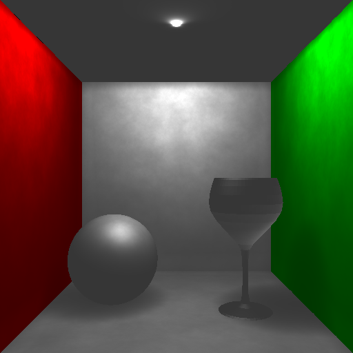
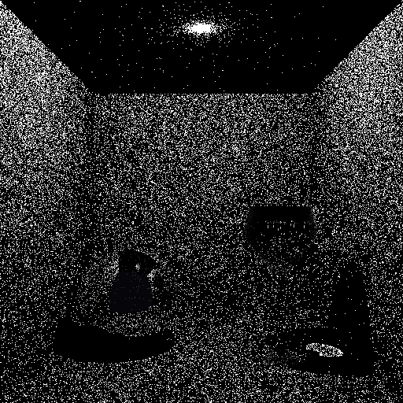
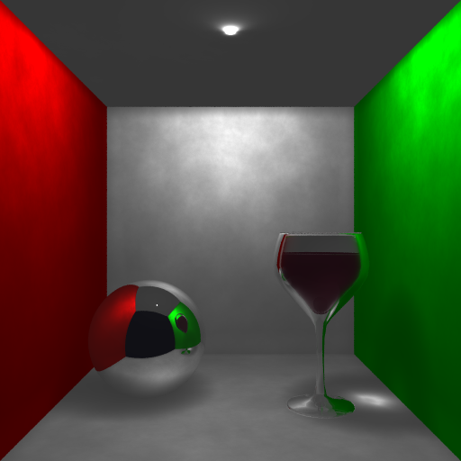
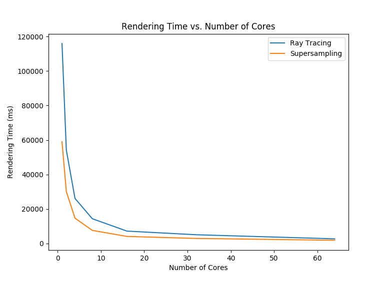

Different Cornell box scenes have been rendered for easy verification of all objectives. Some sets of test images showcase multiple objectives as indicated by the title.

Aliasing artifacts in the geometries are smoothed and vertex normals are interpolated for smooth shading.
 
Photons are visualized [left] by illuminating a pixel if there is a photon within 2.5 \cdot 10^{-3} units away from the point of intersection. The neartest 500 photons are collected [right] for lighting calculations.
| Cores | Ray Tracing (ms) | Supersampling (ms) |
|---|---|---|
| 1 | 115945 | 58980 |
| 2 | 54146 | 30052 |
| 4 | 26125 | 14665 |
| 8 | 14352 | 7581 |
| 16 | 7167 | 4083 |
| 32 | 5052 | 2908 |
| 64 | 2681 | 1858 |

Approximately linear in the number of cores. Timing data is obtained from rendering the Cornell box with ray tracing.


Mountains looked bad when bump mapped so I decided to show a bump mapped sphere instead. This is because they are scaled from the space they were generated in so the partial derivatives are wrong.

Every objective plays an important part in the final scene.
- Adaptive Anti-aliasing for a smoother image.
- Refraction & Reflection are used for the windows, wine, and water.
- The scene renders in 45s on the Waterloo CS server thanks to Multithreading and the KD-Tree Optimization.
- All geometries modelled in the Pine Trees & Supervillain’s Lair objective are present in the scene.
- Mountains Generated by Noise Function are used for the background mountainous region.
- Bump Mapping is used to help simulate water.
- Phong Shading is used to smoothly shade all the meshes in the scene.
- Photon Mapping is for cool lighting effects and better overall illumination.
| Mesh | Number of Faces | Percentage Left |
|---|---|---|
| tree_stump | 124 | 0.19811470066225143 |
| tree_leaves | 56 | 0.2849103479229166 |
| mountains | 7938 | 0.00691777290299551 |
| shark | 882 | 0.025298249939564917 |
| chair | 2270 | 0.02325969022781052 |
| chair_legs | 496 | 0.024951764204871118 |
| table | 572 | 0.059862970952015045 |
Cuts rendering time on the CS server to around 45s from > 60s. Exact timing is unknown because the rendering process times out (gets kicked from the server) without the feature.